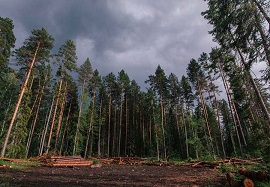

Море — часть Мирового океана, обособленная сушей или возвышениями подводного рельефа. Отличается от Мирового океана также гидрологическим, метеорологическим и климатическим режимами, что связано с их окраинным положением относительно океанов и замедлением водообмена из-за ограниченности связи с открытой частью.
Гора́ — форма рельефа, изолированное резкое поднятие местности с выраженными склонами и подножием или вершина в горной стране. По характеру вершины выделяют пикообразные, куполообразные, платообразные и другие горы. Вершины подводных гор могут представлять собой острова.

Лес — экологическая система, биогеоценоз, в которой главной жизненной формой являются деревья. Лес — составная часть природы, понятие «лес» можно рассматривать на разных уровнях. В глобальном масштабе — это часть биосферы, в локальном — это может быть насаждение.